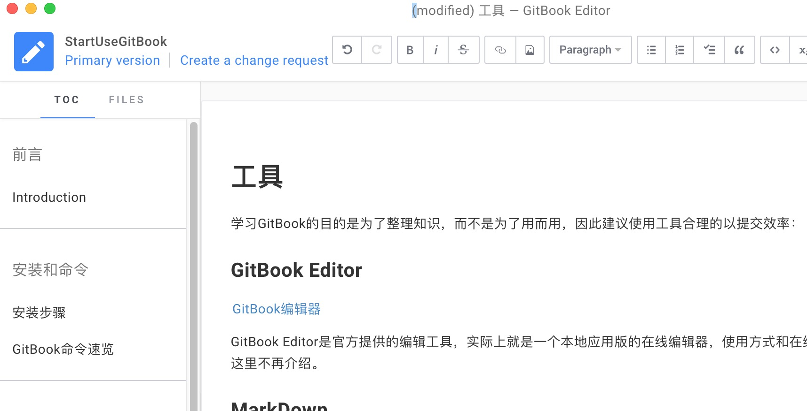

工具
学习GitBook的目的是为了整理知识，而不是为了用而用，因此建议合理的使用工具以提高效率：
GitBook Editor
GitBook Editor是官方提供的编辑工具，实际上就是一个本地应用版的在线编辑器，使用方式和在线编辑器类似，所见即所得，可以自动生成SUMMARY.md，README.md文件，并根据SUMMARY.md文件，生成项目结构及文件。（相当于gitbook init命令），并支持拖拽图片等。

MarkDown
由于Gitbook都是基于.md编辑，当然GitBook Editor已经不错。但是有需要的话可以使用更专业的MarkDown编辑工具：
关于MarkDown语法，这里不做说明。